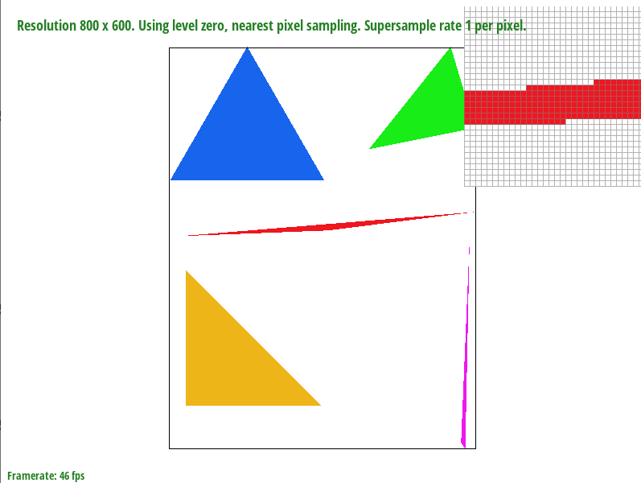
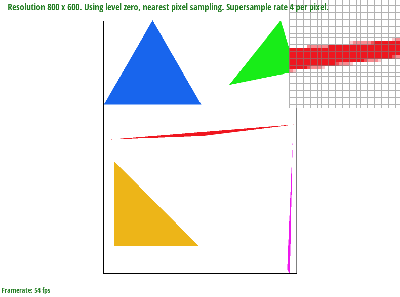
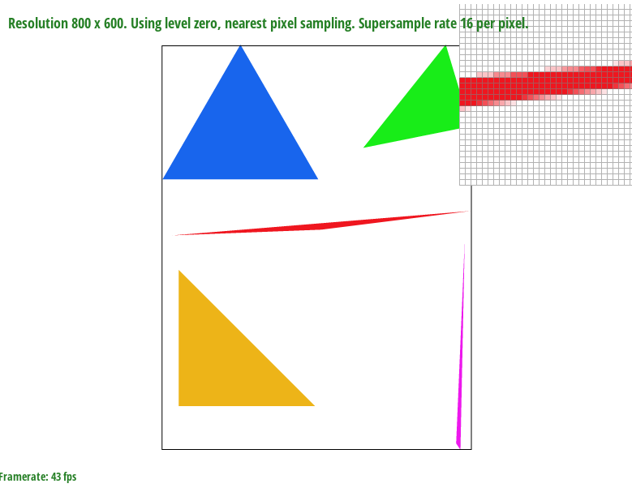
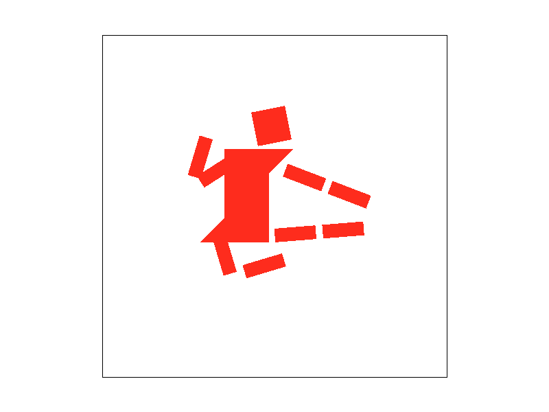
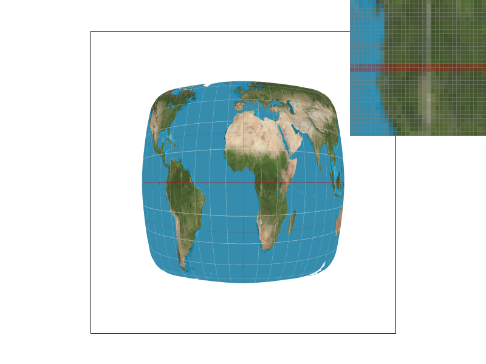
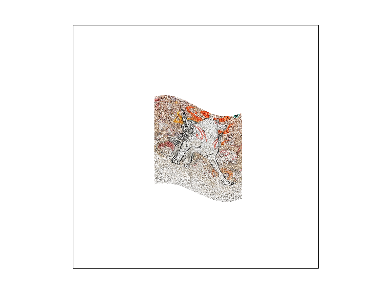
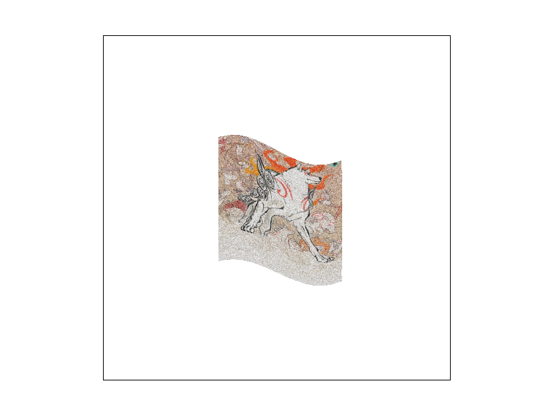
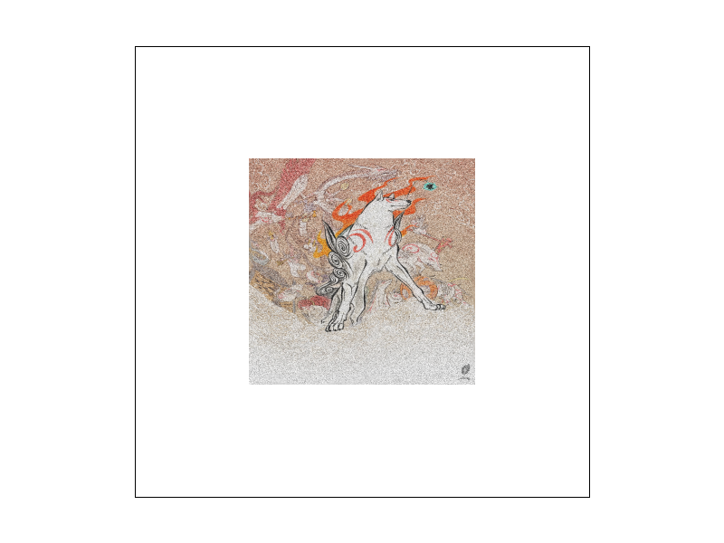

Overview
Give a high-level overview of what you implemented in this project. Think about what you've built as a whole. Share your thoughts on what interesting things you've learned from completing the project.
Section I: Rasterization
Part 1: Rasterizing single-color triangles
Walk through how you rasterize triangles in your own words.
In this part, we rasterized the triangles by utilizing the line test we went over in lecture. More specifically, our algorithm goes line by line, uses the line test to see if that sample lies within the triangle or not, and stops checking that line once it sees a sample that’s no longer in the triangle. Then it moves onto the next line, and so on until all the lines that make up the triangle have been checked.
Explain how your algorithm is no worse than one that checks each sample within the bounding box of the triangle.
Our algorithm is no worse than one that checks every sample in the triangle’s bounding box because it won’t ever check every single pixel in the bounding box. I think this is easier to demonstrate with a picture: see below.

|
Show a png screenshot of basic/test4.svg with the default viewing parameters and with the pixel inspector centered on an interesting part of the scene.
I don’t understand what part of this scene of colored triangles would qualify as “interesting”, so I took two screenshots just in case our tastes differ.

|

|

|
Part 2: Antialiasing triangles
Walk through your supersampling algorithm and data structures. Why is supersampling useful? What modifications did you make to the rasterization pipeline in the process? Explain how you used supersampling to antialias your triangles.
For our implementation of supersampling, we increased my sample buffer in set_sample_rate, artificially increasing the image's resolution (regarding how we sample the image). Then, in rasterize_triangle we multiiplied x and y by the square root of the sample rate--since the sample rate tells us how many samples we're taking in a box, the number of samples we're taking along the x and y increase by the square root.
We then set up the triangle's bounding box by picking the minimum and maximum x and y from these artificially blown-up points and looped through the triangle's bounding box as normal. One key change was made to the fill_pixel function, to have y also be multiplied by the square root of the sample rate to reflect the artificially-enlarged canvas we were "drawing" from.
Next, after taking these samples, we averaged the color values for each pixel in resolve_to_framebuffer. Inside of the already-existing double for loop, we put another nested double for loop to check the samples we'd gathered for each individual pixel. These samples are the very same ones we'd just put into the sample buffer. Pixel by pixel, we'd total all the data we'd collected together, then averaged them out according to the number of samples we'd collected (i.e. the sample rate). This value was then passed into the rgb_framebuffer_target like in the previous part, to be used to draw our now nicely super-sampled triangle.
Show png screenshots of basic/test4.svg with the default viewing parameters and sample rates 1, 4, and 16 to compare them side-by-side. Position the pixel inspector over an area that showcases the effect dramatically; for example, a very skinny triangle corner.
|

|
|

|
|

|
Explain why these results are observed.
We see these results (the triangles becoming "smoother") because increasing the sample rate means that we have more pieces of data to use in assembling our representation of our original image. When our sample rate is 1, that means that for each pixel, we're only taking in the data at one part of the original image, and using that data to dictate the color of the pixel. This effectively works as a binary of sorts, telling us if the pixel we're looking at is, for example, red or white in the case of the red triangle pictured in the first image.
However, if we increase our sample rate, we don't need to limit ourselves to just being red or white: instead, we can look at the average of all our values sampled (or supersampled if you will) to create the illusion of a smoother edge. Anti-aliasing effectively places semi-transparent, or "blended" pixels, along the border of an otherwise sharp edge to fool the eye into filling in the blanks more naturally.
Part 3: Transforms
Create an updated version of svg/transforms/robot.svg with cubeman doing something more interesting, like waving or running. Feel free to change his colors or proportions to suit your creativity. Save your svg file as my_robot.svg in your docs/ directory and show a png screenshot of your rendered drawing in your write-up. Explain what you were trying to do with cubeman in words.
|  |
"Talk is cheap," so here is a picture explaining what I tried to do instead:
I used Illustrator to pose the robot to my fancy, then copy/pasted those new values for the transforms of each of the shapes into the original robot svg file. I know one could go into the SVG file and hand-alter the values one-by-one as well, but that's not as fun.
(Cubeman's red is also based on the color of Ryu's headband: it's slightly different from the default.)
Section II: Sampling
Part 4: Barycentric coordinates
Explain barycentric coordinates in your own words and use an image to aid you in your explanation. One idea is to use a svg file that plots a single triangle with one red, one green, and one blue vertex, which should produce a smoothly blended color triangle.
While I don't have an svg file with a single triangle to show (strapped for time, haha), I did find a picture online.

(Trust me, we implemented barycentric coordinates properly. Check the next image.)
Barycentric coordinates are a way of reckoning space by using the three points of a triangle. By recording your position from the three points as a percentage or fraction of how close you are to said points, all the points within a triangle can be accounted for as functions of the three points.
In other words, if you look at the image above, the closer you are to the green vertex, V2, the greener you are, the closer you are to the red vertex the redder you are, and so on. By reckoning space in this manner, we're able to calculate a smooth gradient of color as seen above: the reason we get a gradient is because we can alter the color values at each position as being equal to their percent distance to each of the vertex. A point that's got a value of 100% on V2, for instance, will have 0% V1 and 0% V2, making it take on 100% of V2's color. Another example is to take a point near the middle of the triangle: say this point is 33% of the way to V2, 33% of the way to V1, and 34% of the way to V3. This point will then take on a color value that is 33% of V1's color, 33% of V2's color, and 34% of V3's, resulting in the brownish hue we get in the middle of the triangle.
Barycentric coordinates can be calculated by creating normals that pass through each of the vertices, like miniature axes (plural of axis). For instance, in the above picture, a point that lies on the line between V1 and V3 would have a V2 value of 0%, and the closer one travels to V2, the higher the V2 value gets. This scaling allows us to have nicely colored triangles, regardless of the triangle's shape.
Show a png screenshot of svg/basic/test7.svg with default viewing parameters and sample rate 1. If you make any additional images with color gradients, include them.

|
Part 5: "Pixel sampling" for texture mapping
Explain pixel sampling in your own words and describe how you implemented it to perform texture mapping. Briefly discuss the two different pixel sampling methods, nearest and bilinear.
Here, pixel sampling was us taking values from a texture and applying them to digital space (in the form of a triangle). We operated between two planes, the digital one and the texture one, and to figure out what color each pixel should be, we'd look at the corresponding values stored in our texture. In both cases, we implemented clamps to ensure that the texels we were sampling were in bounds.
I feel pixel sampling has already been described in the supersampling section, so I'll talk about the changes between that scenario and this one. Because we're working with texture maps, instead of having some solid color that we paint into our pixels and have to blend with supersamples, we instead determine our pixels' colors via the texture map, and have to blend our pixels according to the pixels on that texture map. How we blend or color these pixels depends on our sampling method.
Nearest sampling is exactly what it sounds like: given a point (u,v), we'd find the pixel location that is is closest to it, consult what that value is on our texture, and then return that value. Nearest sampling is infamous for producing sharp edges for this reason, and is very common for upscaling pixel art.
Bilinear sampling, on the other hand, is a bit more complicated. Given a point (u,v), to try and make a "smoother" image, we do something similar to the interpolation performed in the previous part. We'd first find four pixels that encompassed (u,v) best in a box-like formation. Then, by calculating how close (u,v) was to the edges of the four pixels we'd chosen, we could weigh the values of each of these four points by lerping them, first horizontally, then vertically. By doing this, we'd be able to render our image a bit more smoothly (less jaggies) by creating transitional effects between what would otherwise be sharp edges. Bilinear's smoothness generally makes it better than nearest for photo-realistic images, though it can cause images to get blurry at the cost of reducing jaggies.
Check out the svg files in the svg/texmap/ directory. Use the pixel inspector to find a good example of where bilinear sampling clearly defeats nearest sampling. Show and compare four png screenshots using nearest sampling at 1 sample per pixel, nearest sampling at 16 samples per pixel, bilinear sampling at 1 sample per pixel, and bilinear sampling at 16 samples per pixel.
|
|

|

|
|
Comment on the relative differences. Discuss when there will be a large difference between the two methods and why.
In this image, we can see that the equator line is a lot smoother in the renders that use bilinear sampling versus nearest: in nearest, the line comes off as rather chunky, whereas bilinear smoothes it out. Additionally, the white latitudinal lines are rather jagged and sharp in the nearest render, whereas the bilinear algorithm allows for those lines to look more curved, enhancing the beveled quality of the image. Finally, we also see less noise in the bilinear image: our oceans are blue, and not littered with specks of off-colored flecks resulting from nearest sampling.
Part 6: "Level sampling" with mipmaps for texture mapping
Explain level sampling in your own words and describe how you implemented it for texture mapping.
Level sampling is where we sample from different mipmap levels and use the data from these samples to calculate the values of our pixels' colors.
For texture mapping, on the backend, we're drawing from mipmaps that have been formed to represent our target texture at various resolutions. I'll use this picture from Wikipedia to try and explain:

The power of mipmapping is contained in the format you see above: while under ideal circumstances, we can always view a picture at its full resolution, in reality this is not often the case, as images can be upscaled and downscaled for myriad reasons. Mipmaps store the data of how the image should look at smaller resolutions, specifically taking the original image and creating copies that are 1/4 the size of the resolution of the image on the layer "above" them. This storage allows for clearer images at various resolutions because of having more data to work with and because the downscaled images in the mipmap texture have (hopefully) already been antialiased (so we get less noise when we use them).
In our implementation, for trilinear interpolation we calculated the mipmap level that best fit our needs via the formula covered in lecture, along with the guidance on the specs to properly calculate and resize the elements of the SampleParams struct. (These calculations were done in the rasterize_textured_triangle method in rasterizer.cpp, and were then handed over to the sample method attached to the texture passed into rasterize_textured_triangle.)
After finding this level, which would be a float containing a (unlikely to be) integer value, we found the levels closest to this output by running floor() and ceil() on it, clamping these values to [0, the size of the mipmap]. We then took bilinear samples of our texture at each of these levels.
Finally, we calculated how much to weigh these bilinear samples by seeing how close our float, non-integer mipmap level was to the two integers closest to it (for example, a mipmap level of 1.4 would weigh level 1 by 0.4x and level 2 by 0.6). We then returned our two weighted samples.
For linear level sampling with nearest, we simply found the nearest level and used that to render our image.
You can now adjust your sampling technique by selecting pixel sampling, level sampling, or the number of samples per pixel. Describe the tradeoffs between speed, memory usage, and antialiasing power between the three various techniques.
Note: As seen in this project, it's not like these methods are independent of each other: they usually act in harmony with one another. I probably don't need to say this, but since this is a pro/con list, it might make it seem this way.
Pixel sampling:
Pros: Real fast. Very little memory useage compared to the others. Also, there's not a ton of math compared to the other steps.
Cons: Antialiasing? Haha. Oh please. Since we sample pixels, without considering their neighbors, there's virtually none here.
Level sampling:
Pros: When done right, we get some great looking images, and at various resolutions. Looks nice. (Antialiasing power is high.)
Cons: Mipmaps are larger than just using a normal, non-mipmapped texture, since they need to store more data. More calculations also need to be performed (though, for computers, this isn't terrible), and for trilinear, we effectively need double the samples to render each pixel (since we are using the data stored on two seperate layers). Trilinear antialiasing can also look TOO smooth… but hey, when it works, it looks very nice.
Supersampling:
Pros: You can also get some very smooth images with this. It gives our algorithms more data to work with, which will (generally) lead to more accurate-looking renders (if the reference texture is high-res enough).
Cons: If you go crazy with supersamples, you'll be perfoming a LOT more calculations. Increasing supersampling means you're increasing the calculations per pixel by that much, which can get… maybe less good if you're looking for speed (ex. video games can get texture "pop-in" as the console/computer chugs to sample all the points on the texture).
Using a png file you find yourself, show us four versions of the image, using the combinations of L_ZERO and P_NEAREST, L_ZERO and P_LINEAR, L_NEAREST and P_NEAREST, as well as L_NEAREST and P_LINEAR.
Image is originally from Okami, by the (now defunct) Clover Studio. I added some noise to it in Photoshop to try and make the nearest and linear images more visually distinct. All screenshots were taking with the sample rate at 1 for maximum "wow" factor between each version of the render.
|
|
|

|
|

|
|

|
|
|
Section III: Art Competition
We are not participating, but look forward to seeing the entries. :)